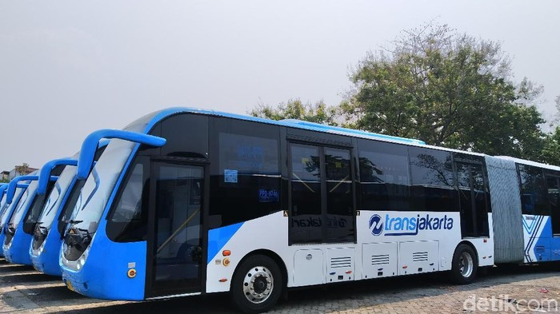

BUS TRANSJAKARTA
- Semua bus TransJakarta (kecuali yang berbahan bakar diesel/biodiesel) berbahan bakar gas (BBG) jenis CNG, dan diisi di SPBG tertentu. Bus-bus ini dibuat dengan menggunakan material khusus. Untuk interior langit-langit bus, menggunakan bahan yang tahan api sehingga jika terjadi percikan api tidak akan menjalar. Untuk kerangkanya, menggunakan galvanil, suatu jenis logam campuran seng dan besi yang kokoh dan tahan karat (berlaku di bus tertentu).
- Bus TransJakarta memiliki pintu yang terletak lebih tinggi dibanding bus lain sehingga hanya dapat dinaiki dari halte Transjakarta (juga dikenal dengan sebutan shelter). Bus koridor 2, koridor 3, bus Amari dan Andini memiliki satu pasang pintu yang terletak di bagian tengah kanan dan kiri. Untuk bus gandeng di koridor 1, 5, 8, 9, 10, 11, 12 memiliki tiga pasang pintu yaitu bagian depan, tengah, belakang kanan dan kiri. Sedangkan bus tunggal di koridor 4, 5, 6, 7, 8, 9, 10 memiliki dua pasang pintu, yaitu bagian depan dan belakang kanan dan kiri.
- Pintu bus menggunakan 3 sistem yaitu sistem lipat, sistem geser, dan sistem putar yang otomatis dapat dikendalikan dari konsol yang ada di panel pengemudi. Mekanisme pembukaan pintu pada bus tunggal koridor 2-8 serta bus gandeng jenis Komodo telah diubah menjadi sistem geser. Di dekat kursi-kursi penumpang yang bagian belakangnya merupakan jalur pergeseran pintu, dipasang pengaman yang terbuat dari gelas akrilik untuk menghindari terbenturnya bagian tubuh penumpang oleh pintu yang bergeser.
- Setiap bus dilengkapi dengan papan pengumuman elektronik dan pengeras suara yang memberitahukan halte yang akan segera dilalui kepada para penumpang dalam 2 bahasa, yaitu bahasa Indonesia dan bahasa Inggris. Namun pada bus-bus baru (kecuali Hino TJSB) hanya menggunakan bahasa Indonesia, tetapi berbunyi dua kali.
- Setiap bus dilengkapi dengan sarana komunikasi radio panggil yang memungkinkan pengemudi untuk memberikan dan mendapatkan informasi terkini mengenai kemacetan, kecelakaan, barang penumpang yang tertinggal, GPS, serta fitur lainnya.
- Setiap bus menampilkan informasi mengenai bus yang sedang beroperasi (Kode bus, himbauan kepada pengguna, dan call center Transjakarta).
- Untuk antisipasi hal-hal darurat. setiap bus telah dilengkapi dengan alat pemecah kaca yang tersedia di beberapa bagian pada tiap bus, tombol darurat di atas pintu bus, pintu darurat (bus tertentu), serta CCTV yang terhubung dengan layar yang berada di dashboard pengemudi bus (terdapat di bus-bus baru).